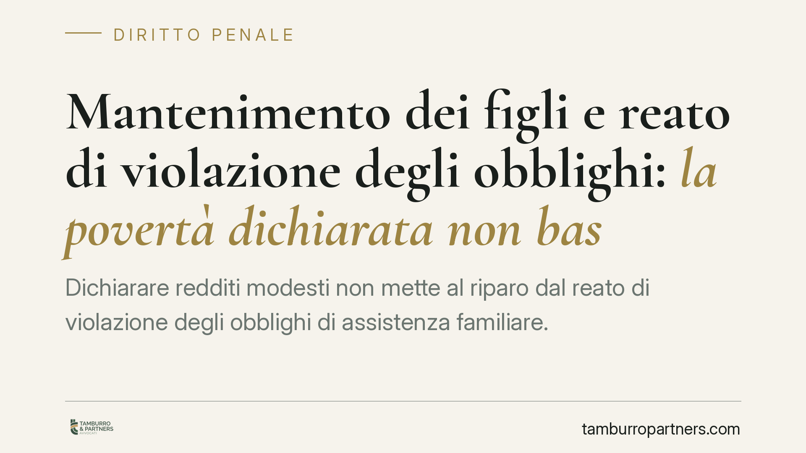

Mantenimento dei figli e reato di violazione degli obblighi: la povertà dichiarata non basta
Dichiarare redditi modesti non mette al riparo dal reato di violazione degli obblighi di assistenza familiare. La giurisprudenza penale distingue tra chi davvero non può pagare il mantenimento e chi maschera da povertà una capacità economica reale, spesso documentata da attività non dichiarate. Un confine che pesa sul genitore obbligato e, in modo speculare, sui figli che quel sostegno attendono.

Il punto di partenza
Un genitore smette di versare il mantenimento ai figli e, chiamato a risponderne, si difende sostenendo di non avere più nulla. È una linea ricorrente nei procedimenti per violazione degli obblighi di assistenza familiare. Il problema è che la Cassazione penale, con orientamento ormai consolidato, non accetta l'incapacità economica come scudo automatico: va provata, ed è esclusa quando dal fascicolo emergono redditi in nero o attività sommerse.
La distinzione è netta e vale la pena tenerla a mente. Un conto è l'impossibilità reale di adempiere — disoccupazione effettiva, malattia invalidante, assenza documentata di risorse. Altro è la sottrazione mascherata da povertà: chi continua a percepire guadagni che non transitano dalla dichiarazione dei redditi e, formalmente nullatenente, gestisce di fatto attività economiche. Nel secondo caso la difesa fondata sui "redditi bassi" non regge.
Il quadro normativo
Il riferimento è l'art. 570-bis del codice penale, introdotto dal d.lgs. 1° marzo 2018, n. 21 nell'ambito del principio della riserva di codice. La norma estende le pene previste dall'art. 570 c.p. al coniuge che si sottrae agli obblighi di natura economica in materia di separazione, divorzio e affidamento dei figli.
L'art. 570-bis ha assorbito la disciplina prima contenuta in due disposizioni extracodicistiche: l'art. 12-sexies della legge 1° dicembre 1970, n. 898 (divorzio) e l'art. 3 della legge 8 febbraio 2006, n. 54 (affidamento condiviso). In sostanza, le condotte già sanzionate da quelle norme sono ora ricondotte al codice penale, con richiamo alle pene dell'art. 570.
Sul piano probatorio, il principio applicato dai giudici è lineare: spetta all'imputato dimostrare l'impossibilità assoluta e incolpevole di adempiere. Non basta allegare una dichiarazione dei redditi scarna. Se gli accertamenti fanno emergere disponibilità economiche effettive — movimentazioni bancarie, tenore di vita, gestione di attività commerciali — l'esimente viene meno.
La questione della procedibilità
Qui serve precisione, perché l'equazione «mantenimento ai figli = sempre procedibilità d'ufficio» è imprecisa. Il regime va letto alla luce della riforma Cartabia (d.lgs. 10 ottobre 2022, n. 150), che ha ampliato i casi di procedibilità a querela per diversi reati contro la persona e il patrimonio.
In linea generale, per i reati previsti dall'art. 570 c.p. la procedibilità d'ufficio è ancorata alle ipotesi che coinvolgono i figli minori. La condotta commessa a danno del coniuge, in assenza di figli minori coinvolti, può invece seguire regimi diversi. Prima di ipotizzare qualsiasi strategia — denuncia, querela, costituzione di parte civile — è quindi indispensabile verificare la fattispecie concreta e il regime applicabile al momento dei fatti.
Le implicazioni civilistiche
Il profilo penale non esaurisce il tema. Chi attende il mantenimento dispone anche degli strumenti civili di recupero coattivo: l'assegno fissato in sede di separazione o divorzio è titolo esecutivo, azionabile con pignoramento, anche presso terzi (datore di lavoro, istituti di credito). L'art. 156 c.c. consente inoltre, nella separazione, di ottenere garanzie e il versamento diretto da parte di terzi tenuti verso l'obbligato.
In concreto, l'azione penale e quella civile possono procedere in parallelo. La prima colpisce la condotta; la seconda mira al recupero materiale delle somme. Per chi riceve il sostegno, trascurare il binario civile significa spesso rinunciare allo strumento più efficace per vedere effettivamente il denaro.
Cosa fare in concreto
- Documentate gli inadempimenti. Conservate prova dei mancati versamenti: estratti conto, comunicazioni, solleciti scritti. La prova della condotta è il primo tassello di qualunque azione.
- Raccogliete indizi sulla reale capacità economica. Tenore di vita, attività gestite di fatto, spese non coerenti con i redditi dichiarati possono smontare la difesa fondata sulla nullatenenza.
- Verificate il regime di procedibilità. Prima di presentare denuncia o querela, fate accertare quale regime si applichi alla vostra situazione, in particolare se sono coinvolti figli minori.
- Attivate anche la via civile. Non limitatevi al penale: valutate il recupero coattivo tramite esecuzione forzata e gli strumenti dell'art. 156 c.c.
- Fatevi assistere per tempo. La scelta tra tutela penale, civile o entrambe dipende dal caso concreto e incide sui tempi di recupero.
Una nota di metodo
Un avvertimento utile a chi legge massime in rete: gli estremi di una sentenza (numero e anno) vanno sempre verificati alla fonte prima di farne un argomento. Un orientamento può essere solido anche senza citarne a memoria il numero; ciò che conta è il principio applicato. E il principio, qui, è chiaro: dichiarare redditi bassi non è, di per sé, una difesa.
Contributo informativo a cura di Tamburro & Partners – Avv. Giuseppe Tamburro. Non costituisce parere legale.
Ogni condominio ha una storia a sé.
Se gestisci un'amministrazione e vuoi un confronto su una specifica questione condominiale, scrivi allo studio. Ti rispondiamo entro un giorno lavorativo.